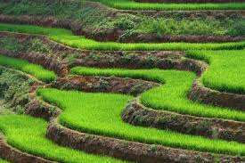
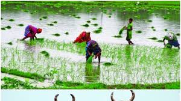

Agriculture describes the practice of growing crops or raising animals. Someone who works as a farmer is in the agriculture industry. The Latin root of agriculture is agri, or "field," plus cultura, "cultivation." Cultivating a piece of land, or planting and growing food plants on it, is largely what agriculture means.
Agriculture not only gives riches to a nation, but the only riches she can call her own.
Nomadic Herding.
Livestock Ranching.
Shifting Cultivation.
Intensive Subsistence Farming.
Commercial Plantations.
Mediterranean Agriculture.
Commercial Grain Farming.
